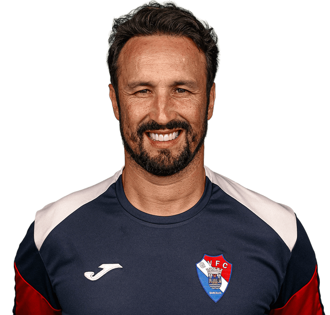
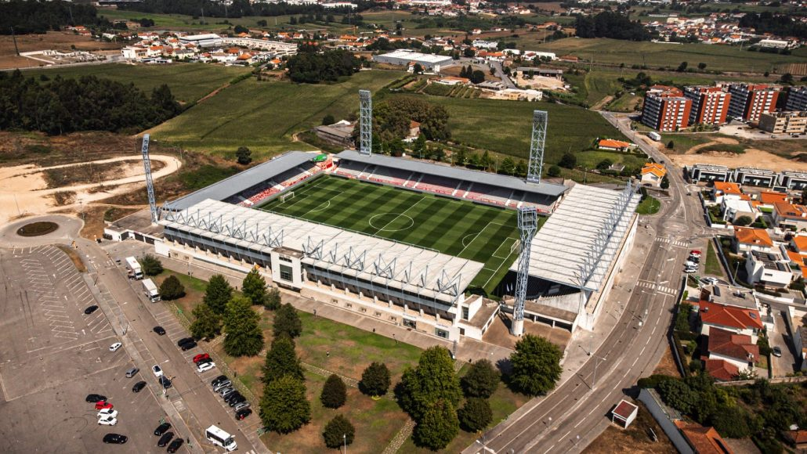

Treinador: César Peixoto
A trajetória de César Peixoto é definida pela elegância estratégica e por uma mentalidade ofensiva audaz, afirmando-se como um treinador de perfil resiliente e de vincada capacidade de imprimir um futebol fluido e positivo às su

Estádio: Cidade de Barcelos
O Estádio Cidade de Barcelos ergue-se como um baluarte da identidade gilista, pautado por uma arquitetura moderna e uma atmosfera de fidelidade inabalável, afirmando-se como um recinto de perfil acolhedor, vibrante e de vincada mística barcelense

Estilo de Jogo:
Desde que assumiu o Gil Vicente FC em dezembro de 2025, César Peixoto tem implementado um modelo de jogo que privilegia a estética, a posse de bola e o protagonismo ofensivo.
"A Força de um Povo!"